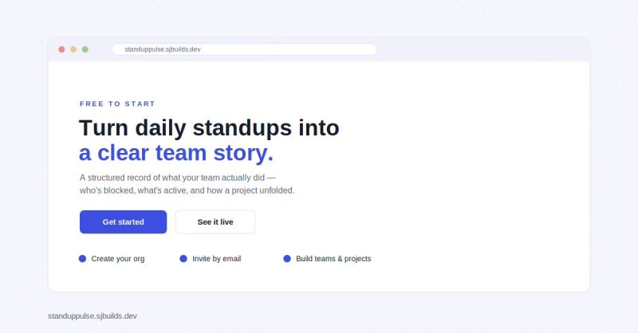
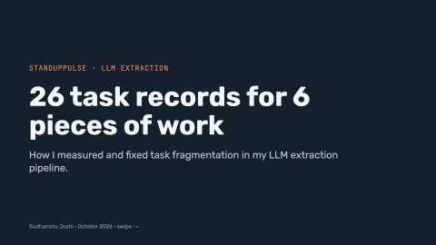

Case study · 2026
StandupPulse
A standup tracker that turns daily updates into a clear record of what a team actually did. This is how I built it, and how I fixed the problem that nearly broke its core feature: an LLM that kept turning one piece of work into four.

01
The problem
Every team I've worked on runs daily standups, and every team hits the same wall after a few weeks: nobody can answer "what actually happened on this project?" without digging through dozens of scattered updates. The information is all there. It's just buried in Slack threads, memory and half-read messages.
I wanted the answer to be a page load, not an investigation.
02
What I built
- A ten-second daily update. Yesterday's items carry over from your last standup, so you add what you're doing today and flag a blocker if you have one.
- A team dashboard showing who has submitted, who is missing and who is blocked, with every entry expandable.
- The Visualizer, which turns any date range into a narrated timeline of how a project unfolded: milestones, blockers and how they were resolved.
- Real team structure. Organisations, teams and projects, email invitations, and admin, manager and member roles, down to which teams a manager actually oversees.
03
Architecture
A React app talks to an Express API. Anything slow or LLM-bound happens off the request path, so submitting a standup always feels instant.
- Extraction runs in-process right after the standup response has been sent. It turns free text into tasks, statuses and progress events.
- Visualizer stories are queued jobs. The client polls for the result, and generated stories are cached.
- Dashboard numbers are computed server-side by a snapshot worker, not eyeballed from a channel scroll.
- The LLM provider is swappable. Claude or Groq's free tier, chosen by one setting, behind a single client with the same timeouts and retry behaviour.
04
The hard part: task fragmentation
The Visualizer is only as good as its task history. To build that history, the LLM reads each standup and decides which tasks it mentions. That turned into an entity-resolution problem: people describe the same work differently every day.
"Investigating flaky checkout tests"
"Chasing intermittent test failures"
"Fixed the race condition"
Same underlying task, but the model treated each one as new. Every duplicate split one piece of work into disconnected records, and the story fell apart.
How the approach evolved
- Title matching, no context. Case-insensitive matching handled "Refund API" versus "refund API", but any rewording still created a duplicate.
- Open tasks in the prompt. Better, but when someone recapped recently finished work ("Finished the gateway integration"), the task was no longer in the open list, so the model created a duplicate.
- Open and recently completed tasks. The prompt lists open tasks plus anything closed in the last three days, with each one's status, and tells the model to reuse an existing title exactly when the meaning matches. That gives it enough context to resolve rewordings and recaps, while the three-day window keeps prompts bounded on long-running projects.
Fragmentation rate task records created ÷ actual tasks · 1.0 = no duplicates
I wrote this up in more detail as a LinkedIn carousel. The evaluation script lives in the repo, so I can re-run it every time I change the prompt or the model.

Read the full breakdown on LinkedIn →05
LLM output is untrusted input
I treat whatever the model returns like a request body from an unknown client. A few failures taught me why:
- Schema validation, all or nothing. The output is checked against a strict schema. An object where an array should be, or an off-list status like "done" or "wip", rejects the whole response rather than writing a partial, possibly wrong set.
- Empty is a real failure mode. Reasoning-style models spend tokens thinking before they answer. When the token limit cut them off mid-thought, they returned a genuinely empty response, which silently dropped that standup's extraction. Raising the limit, sized for the longer prompt, fixed it.
- Open-weight models wrap JSON in markdown fences even when told not to, so the Groq path strips them before parsing.
- Retry only what a retry can fix. Only rate limits (429) are retried, honouring the provider's
Retry-Afteror backing off with jitter. A bad request fails the same way every time, and retrying a timeout just doubles the wait. - Model-generated titles are escaped before they're used in a database lookup, so a stray
(or*can't turn into a pattern.
06
Multi-tenancy I can trust
Many organisations share one database, so one leaked query would be a breach, not a bug. Every tenant-scoped query goes through a single wrapper that adds the organisation from the authenticated token, never from the URL or request body. One narrow place to get right, and one place to test.
A cross-tenant leak suite runs in CI on every pull request and every push to main. It checks that:
- List endpoints never include another organisation's data.
- Fetching another organisation's records by ID returns 404, even as an admin.
- An
organizationIdsent in the request body is ignored. - A token signed with the wrong secret is rejected.
- A manager can't see teams they don't manage, and a member can't reach manager routes at all.
- Visualizer job IDs are sequential and shared across organisations, so a guessed ID from another org gets a 404, never a 403 that would confirm it exists.
07
Fast, fresh, and never twice
- Stories are cached, but never stale. Each cached story stores a hash of the events it was built from. When a new or edited standup changes those events, the hash changes and the story regenerates. Without that, a story stayed stale for its whole seven-day cache life.
- Writes are idempotent. Mobile networks retry, so the API accepts an optional
Idempotency-Key. The first request claims it in Redis, a retry gets the original result back, and a server error releases the claim so a genuine retry gets a fresh attempt. I explain the idea in this article. - Double submits can't break anything. Two concurrent submits for the same day return one 201 and one 409, never a 500. A test covers the race.
08
What's next
One issue remains: the model sometimes reads a blocker, like "waiting for staging credentials", as a new task. That's over-extraction rather than entity resolution, and it's next on the list:
- Structured outputs, where the model picks an existing task ID instead of writing a title.
- Letting people tick their open tasks on the standup form, so those link directly.
- Normalised title matching and manual task merging as safeguards.